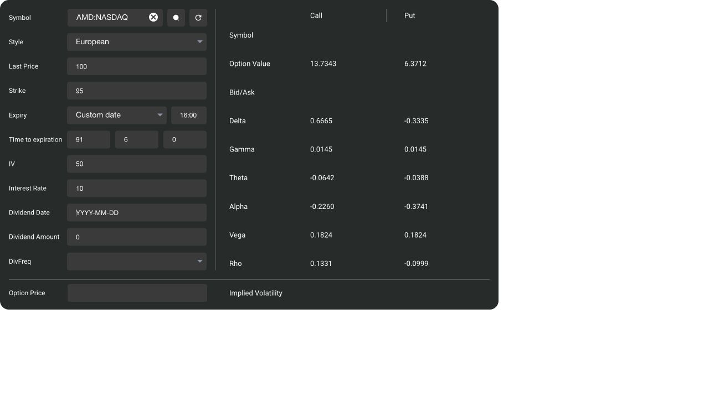

Verification & differences
Historical baseline: this comparison describes the earlier four-panel lab. The current independent implementation adds American pricing, cash dividends, probabilities, editable positions and imported market/HV analysis. Open current implementation and reconciliation. Full original equivalence remains unproven. Saved resources do not supply the remote valuation engines.
Four online pricing observations, including one American case, and one inverse-IV sample were preserved. Three European cases were compared numerically. Local time includes fractional days divided by 365; the vendor's exact time convention is unknown. Stock zero-cash-dividend inputs were compared with local q=0, which does not prove identical server handling.
Observed price differences
| Case | Side | Original | Local | Local − original | Assessment |
|---|---|---|---|---|---|
| European stock case with zero cash dividend shown | Call | 13.7343 | 13.695273 | -0.039027 | Residual difference |
| European stock case with zero cash dividend shown | Put | 6.3712 | 6.349714 | -0.021486 | Residual difference |
| European index case with continuous yield | Call | 5.7854 | 5.785217 | -0.000183 | Residual difference |
| European index case with continuous yield | Put | 5.2962 | 5.296745 | +0.000545 | Residual difference |
| European index case at spot 110 | Call | 12.4238 | 12.424161 | +0.000361 | Residual difference |
| European index case at spot 110 | Put | 2.0340 | 2.034110 | +0.000110 | Residual difference |
| American stock case at the same displayed standard inputs | Call | 13.7343 | 13.695273 | -0.039027 | Unsupported American exercise |
| American stock case at the same displayed standard inputs | Put | 6.5280 | 6.349714 | -0.178286 | Unsupported American exercise |
Greek values, full parameters and differences:
European stock case with zero cash dividend shown
Original stock UI uses regular cash dividends; zero amount was shown. Local q=0 is a comparison assumption, not proof of identical server dividend handling.
{
"spot": 100,
"strike": 95,
"days": 91.25,
"years": 0.25,
"rate": 0.1,
"volatility": 0.5,
"yield": 0
}| Metric | Side | Original | Local | Local − original |
|---|---|---|---|---|
| Option Value | Call | 13.7343 | 13.695273 | -0.039027 |
| Option Value | Put | 6.3712 | 6.349714 | -0.021486 |
| Delta | Call | 0.6665 | 0.666465 | -0.000035 |
| Delta | Put | -0.3335 | -0.333535 | -0.000035 |
| Gamma | Call | 0.0145 | 0.014547 | +0.000047 |
| Gamma | Put | 0.0145 | 0.014547 | +0.000047 |
| Theta | Call | -0.0642 | -0.064327 | -0.000127 |
| Theta | Put | -0.0388 | -0.038942 | -0.000142 |
| Alpha | Call | -0.2260 | -0.226148 | -0.000148 |
| Alpha | Put | -0.3741 | -0.373563 | +0.000537 |
| Vega | Call | 0.1824 | 0.181843 | -0.000557 |
| Vega | Put | 0.1824 | 0.181843 | -0.000557 |
| Rho | Call | 0.1331 | 0.132378 | -0.000722 |
| Rho | Put | -0.0999 | -0.099258 | +0.000642 |
European index case with continuous yield
Continuous yield input shown in original UI.
{
"spot": 100,
"strike": 100,
"days": 180.51041666666666,
"years": 0.49454908675799086,
"rate": 0.03,
"volatility": 0.2,
"yield": 0.02
}| Metric | Side | Original | Local | Local − original |
|---|---|---|---|---|
| Option Value | Call | 5.7854 | 5.785217 | -0.000183 |
| Option Value | Put | 5.2962 | 5.296745 | +0.000545 |
| Delta | Call | 0.5366 | 0.536670 | +0.000070 |
| Delta | Put | -0.4534 | -0.453487 | -0.000087 |
| Gamma | Call | 0.0279 | 0.027930 | +0.000030 |
| Gamma | Put | 0.0279 | 0.027930 | +0.000030 |
| Theta | Call | -0.0163 | -0.016299 | +0.000001 |
| Theta | Put | -0.0136 | -0.013626 | -0.000026 |
| Alpha | Call | -1.7137 | -1.713606 | +0.000094 |
| Alpha | Put | -2.0504 | -2.049713 | +0.000687 |
| Vega | Call | 0.2762 | 0.276250 | +0.000050 |
| Vega | Put | 0.2762 | 0.276250 | +0.000050 |
| Rho | Call | 0.2368 | 0.236799 | -0.000001 |
| Rho | Put | -0.2505 | -0.250467 | +0.000033 |
European index case at spot 110
Continuous yield input shown in original UI.
{
"spot": 110,
"strike": 100,
"days": 180.51041666666666,
"years": 0.49454908675799086,
"rate": 0.03,
"volatility": 0.2,
"yield": 0.02
}| Metric | Side | Original | Local | Local − original |
|---|---|---|---|---|
| Option Value | Call | 12.4238 | 12.424161 | +0.000361 |
| Option Value | Put | 2.0340 | 2.034110 | +0.000110 |
| Delta | Call | 0.7755 | 0.775517 | +0.000017 |
| Delta | Put | -0.2146 | -0.214640 | -0.000040 |
| Gamma | Call | 0.0188 | 0.018789 | -0.000011 |
| Gamma | Put | 0.0188 | 0.018789 | -0.000011 |
| Theta | Call | -0.0138 | -0.013774 | +0.000026 |
| Theta | Put | -0.0116 | -0.011644 | -0.000044 |
| Alpha | Call | -1.3645 | -1.364156 | +0.000344 |
| Alpha | Put | -1.6140 | -1.613714 | +0.000286 |
| Vega | Call | 0.2249 | 0.224872 | -0.000028 |
| Vega | Put | 0.2249 | 0.224872 | -0.000028 |
| Rho | Call | 0.3604 | 0.360441 | +0.000041 |
| Rho | Put | -0.1268 | -0.126825 | -0.000025 |
American stock case at the same displayed standard inputs
Original stock UI uses regular cash dividends; zero amount was shown. Local q=0 is a comparison assumption, not proof of identical server dividend handling.
{
"spot": 100,
"strike": 95,
"days": 91.25,
"years": 0.25,
"rate": 0.1,
"volatility": 0.5,
"yield": 0
}| Metric | Side | Original | Local | Local − original |
|---|---|---|---|---|
| Option Value | Call | 13.7343 | 13.695273 | -0.039027 |
| Option Value | Put | 6.5280 | 6.349714 | -0.178286 |
| Delta | Call | 0.6665 | 0.666465 | -0.000035 |
| Delta | Put | -0.3445 | -0.333535 | +0.010965 |
| Gamma | Call | 0.0145 | 0.014547 | +0.000047 |
| Gamma | Put | 0.0153 | 0.014547 | -0.000753 |
| Theta | Call | -0.0642 | -0.064327 | -0.000127 |
| Theta | Put | -0.0413 | -0.038942 | +0.002358 |
| Alpha | Call | -0.2260 | -0.226148 | -0.000148 |
| Alpha | Put | -0.3716 | -0.373563 | -0.001963 |
| Vega | Call | 0.1824 | 0.181843 | -0.000557 |
| Vega | Put | 0.1831 | 0.181843 | -0.001257 |
| Rho | Call | 0.1331 | 0.132378 | -0.000722 |
| Rho | Put | -0.0812 | -0.099258 | -0.018058 |
Inverse implied volatility
Original European stock sample, target option price 13.7343; the UI returns separate call and put implied volatilities.
| Side | Original | Local BSM |
|---|---|---|
| Call | 50.28% | 50.214585% |
| Put | 90.19% | 90.093418% |
Probability sample
S=100, rate=3%, dividend yield=2%, volatility=20%, 180 days 12 hours 15 minutes; targets 90 and 110. Original terminal probabilities: 23%, 52%, 25% (sum 100%). Touching P1=45.38%, P2=49.80%, Both=6.97%, Either=53.77%, Neither=46.23%. Bounds and Either+Neither pass. The ordinary union identity gives 88.21%, which differs from the displayed Either value. The cause or vendor interpretation is unresolved; these values are not used as a golden reference for a local probability clone.
Standard-deviation prices are ordered: 65.55, 75.45, 86.85, 115.06, 132.44, 152.44. Saved original observation.
Feature coverage
| Original feature | Local support | Result |
|---|---|---|
| European price & Greeks | Independent BSM with continuous yield; Alpha added | Three live cases compared; prices are close in index cases but not identical at original display precision. |
| American pricing & discrete cash dividends | Not implemented | Original American put 6.5280 vs original European put 6.3712 for the saved stock sample. |
| Inverse implied volatility | Independent bisection of local BSM | Original inversion and local inversion differ; see table. |
| Position P&L simulator | Seven selected expiry payoff strategies only | No arbitrary multileg editor, before-expiry scenario surface or original valuation engine. |
| Probability calculator | Not implemented | Original terminal/touching outputs and one consistency check preserved. |
| Market monitors / historical IVX | Not implemented | Original descriptions, guides and available UI snapshots preserved; remote market feeds are not copied. |
| Parity / futures margin | Independent local educational arithmetic | These two tools are course supplements, not OIC-original calculators. |
The independent mathematical implementation passed 188 model, unit, boundary and arithmetic checks, including Alpha. These checks validate its stated model and do not establish vendor equivalence. Local mathematical checks.
Machine-readable comparison · Raw original pricing observations · Original IV output · Server dependency source evidence
